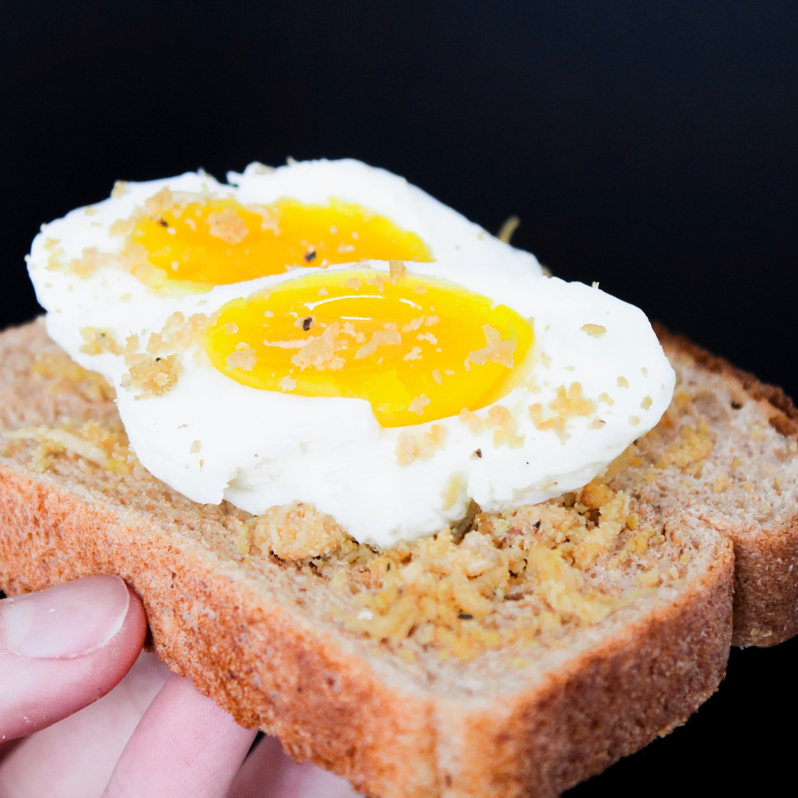
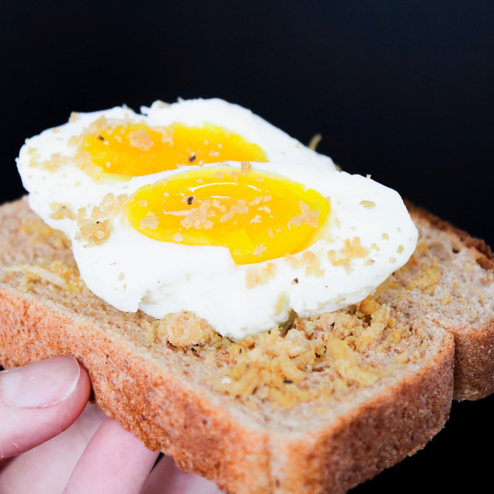
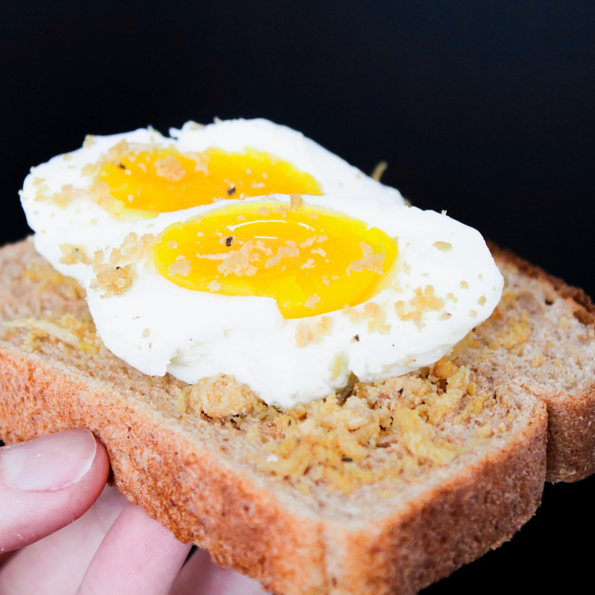

Hello guys, this recipe is about poached egg. It is actually raw egg fried in oil. I love eggs, So this recipe is very simple and easy to make. You guys will love it.

Ingredients needed
Steps to take

Was it helpful?
🤩
😁
🙂
🙁
😠
Here is some other fried egg recipe